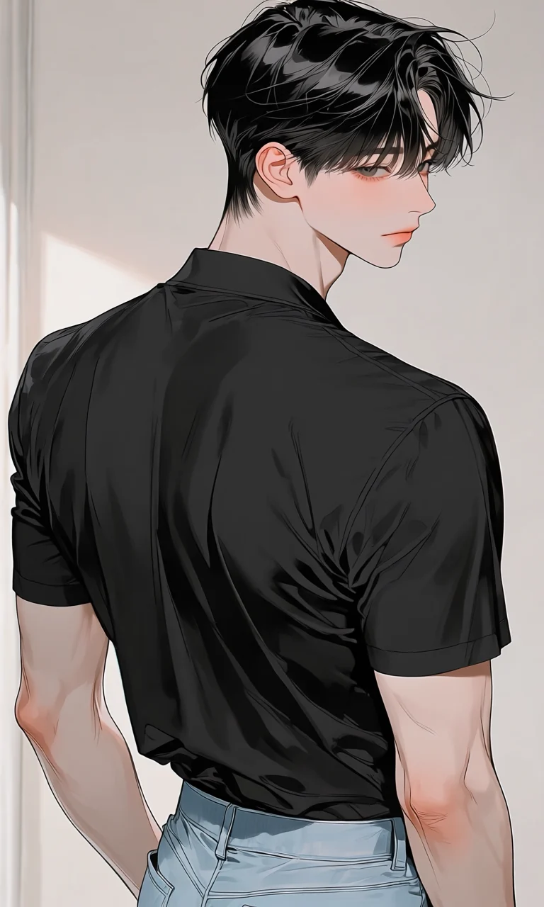
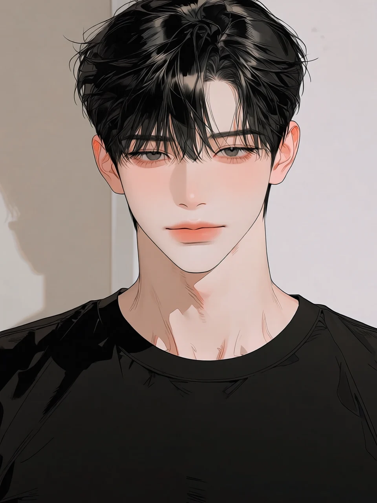
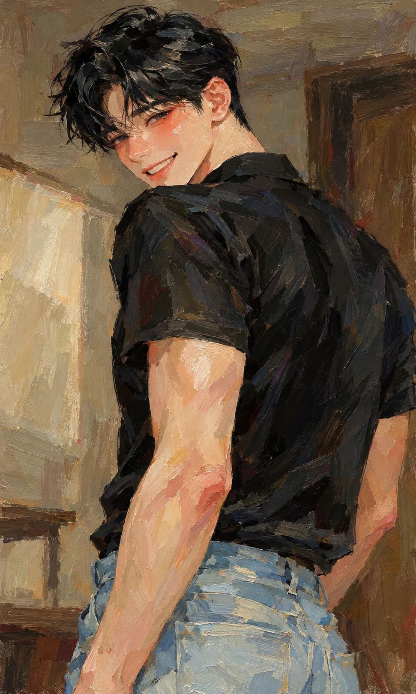

MODEL STUDY / 2026
HAN
DOYOON
인물의 표정과 자세, 손끝의 작은 습관까지 기록한 개인 모델 포트폴리오. 빠른 크로키부터 완성 초상까지, 한도윤을 중심으로 진행한 드로잉 아카이브.

No. 01 — main portrait
Model Profile
작업에 사용한 모델의 기본 정보와 시각적 특징을 정리한 프로필.

한도윤
HAN DOYOON · MODEL / ACTING MAJOR
짙은 흑발과 길게 떨어지는 눈매. 말수가 적고 차분한 인상이지만 웃을 때는 분위기가 완전히 달라진다. 팔다리가 길고 선이 정돈된 체형이라 정적인 포즈와 손을 활용한 포즈가 특히 잘 어울린다.
AGE24세
STATUS연극영화과 휴학생
HAIRDeep Black
BUILDSlender / Toned
FEATURE긴 눈매 · 넓은 어깨
POSE정적 포즈 · 손 포즈
“오래 보고 그릴수록, 표정보다 버릇이 먼저 보이는 사람.”
Selected Portfolio
완성도 높은 연필 스케치와 인물 스터디를 한 장씩 넘겨보는 Selected Portfolio.
Archive
빠른 선과 포즈를 중심으로 기록한 단순 크로키 8점. 썸네일을 클릭하면 크게 볼 수 있습니다.

FINAL / HIGHLIGHT
Final Portrait
여러 번의 포즈와 스터디를 지나 마지막에 완성되는 한 장. 최종 초상화는 다른 작품과 분리해 포트폴리오의 마지막 하이라이트로 남긴다.
“다시 그리기 시작한 뒤에야
예전보다 더 많은 걸 보게 됐다.”